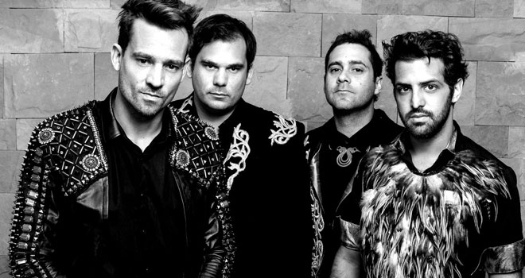
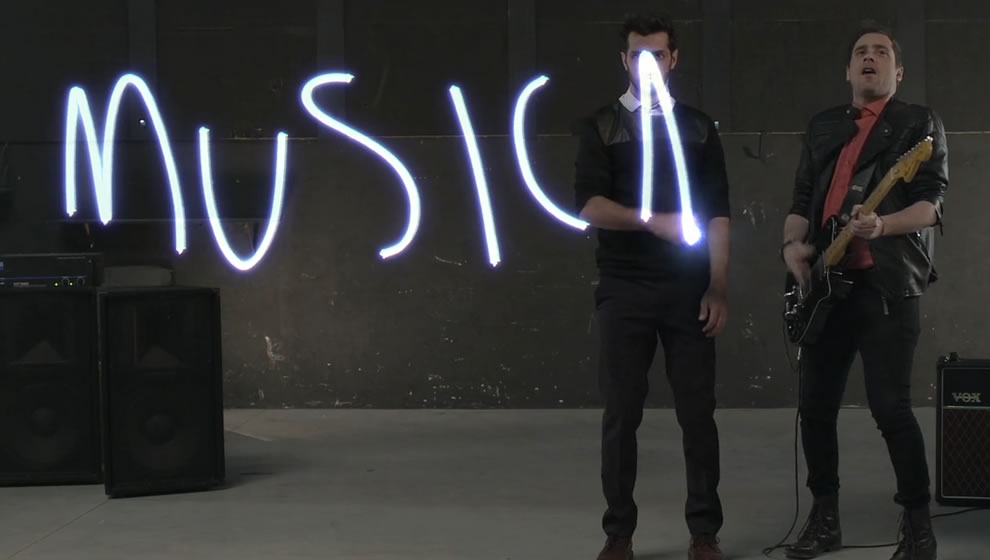
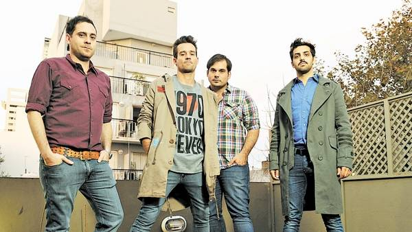

Inicio
Es una banda de pop rock surgida en Buenos Aires en el año 2002

Biografía
Hacia finales de la década de los 90 y antes de formar «Tan Biónica», Chano Moreno Charpentier, Bambi Moreno Charpentier y Sebastián Seoane habían integrado un grupo musical de punk rock llamado «MIC». En el año 2001 deciden encarar un nuevo proyecto y a éste se suma el baterista Diego Lichtenstein. Primeramente, la banda se hizo conocer bajo otros nombres como «Tan Electrónica» o «Biónica Electrónica» , hasta que se optó por el nombre actual. Ese mismo año se filtra un demo titulado «Tapa de Moda», que incluía algunas canciones que posteriormente fueron grabadas para sus primeras producciones profesionales, y la interpretación de «Más loca que yo», originalmente compuesta por la banda Turf.

Integrantes
Chano Charpentier
Bambi Charpentier
Diego Lichestein
Seby Seoane

Discografía
Durante los años posteriores, Tan Biónica graba su primer disco de estudio, Canciones del huracán (editado en agosto de 2007 por EMI Música).El primer corte de difusión, «Arruinarse» , se ganó un lugar en las radios de fórmula y canales de música. Esto le permitió al grupo acaparar su audiencia porteña y comenzar a realizar recitales por varias provincias. Las canciones «Chica Biónica» y «Lunita de Tucumán» también fueron moderadamente rotadas en radio y televisión. En el año 2010, Canciones del Huracán fue reeditado junto a Wonderful Noches.
A fines de 2010, la consagración de Tan Biónica vendría con el lanzamiento de Obsesionario, y más específicamente, su primer single, «Ella» , que se convirtió en una de las canciones del verano. Su videoclip, además, fue el primero de una banda latinoamericana en ser filmado en 360°. Los siguientes cortes de difusión, «Beautiful», «El Duelo», «Obsesionario en La Mayor», «Loca» y «La comunidad» mantuvieron a la banda en los tops de rotación radial de la Argentina, logrando penetración parcial en el resto de Latinoamérica.
El éxito cosechado por Obsesionario fue reconocido por CAPIF con dos premios Carlos Gardel en las categorías Mejor artista pop y Mejor álbum de artista nuevo. Por su parte, la cadena internacional Los 40 Principales le entregó el galardón de «Mejor artista argentino del 2011». Finalmente consagraron esta gran gira llenando tres Luna Park el 21 de junio, 23 de junio y el 24 de junio de 2012 en la Ciudad de Buenos Aires. La banda hizo su último show en el marco del tour en Montevideo. Entre los shows de la gira, con más de 70 conciertos en distintos países y ciudades, se pueden resaltar las visitas a México, Francia y Portugal representando a la República Argentina en el Rock in Río 2012, realizado en la ciudad de Lisboa.
Canciones del Huracán
Obsesionario en la mayor

Canciones del Huracán
Obsesionario en la mayor